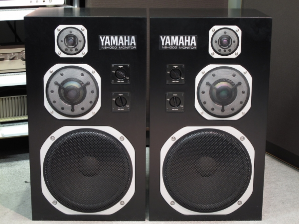
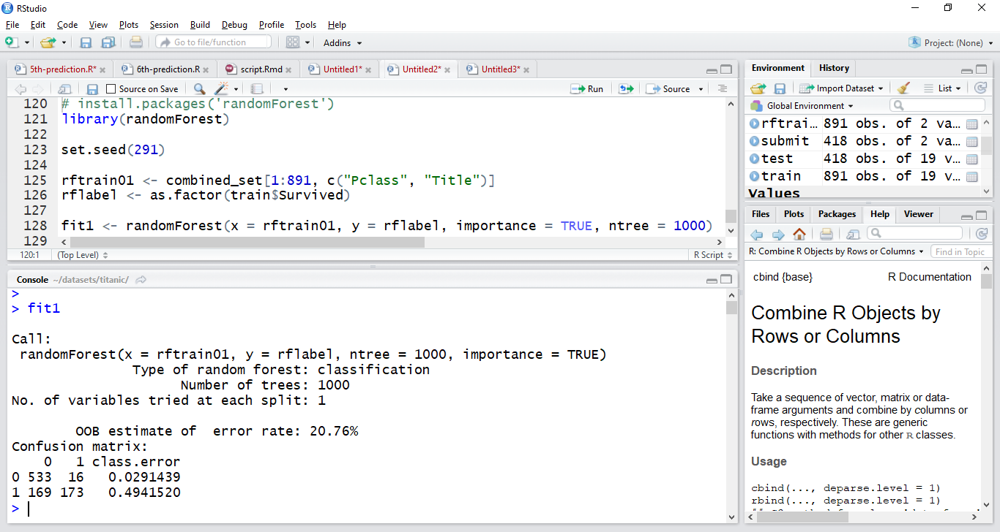
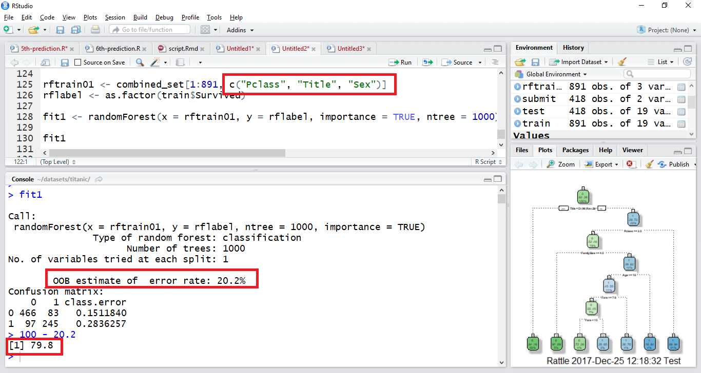
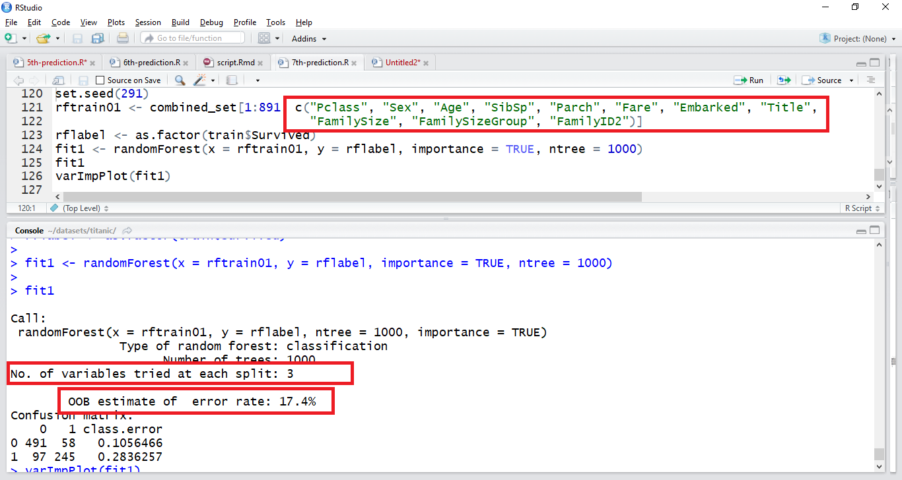
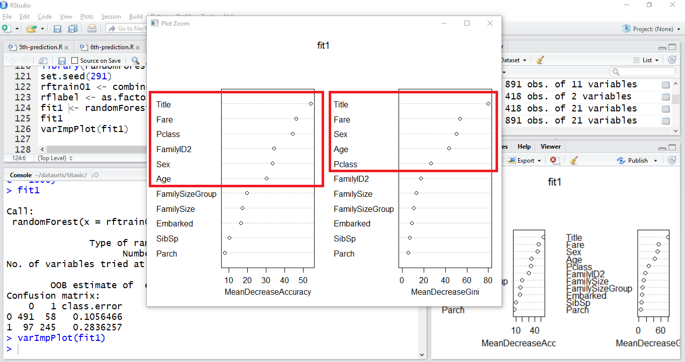
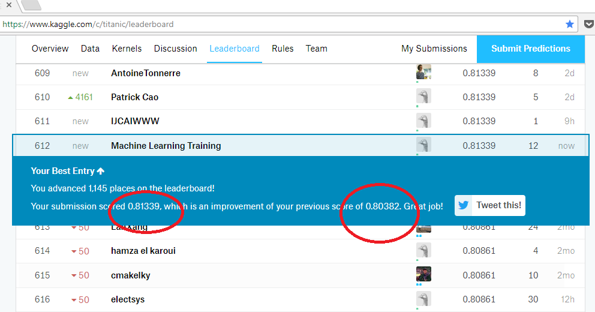

৭.৯. সপ্তম প্রেডিকশন (র্যান্ডম ফরেস্ট)¶
সপ্তম প্রেডিকশন (র্যান্ডম ফরেস্ট)¶
| আমার প্রিয় চ্যাপ্টার |
|---|
শুরু করি একটা গল্প দিয়ে। ছোটবেলা থেকেই গান শুনছি আমরা। প্রথমে গান শুনতাম রেডিওতে। শুরুর দিকের রেডিওগুলোতে স্পিকার থাকতো একটা। আস্তে আস্তে আধুনিক হতে থাকলো সেই আমাদের রেডিওগুলো। এরপর আমাদের ঘরে ঘরে চলে চলে এলো “টু-ইন-ওয়ান”। সেটারও প্রথম দিকে আমরা গান শুনতাম মনো স্পিকারে। মানে, ওই একটা স্পিকার। কিছুদিন পরে দেখা গেল সেই জায়গা দখল করেছে স্টেরিও স্পিকার। সোজা বাংলায় - একটা স্পিকারের জায়গায় দুইটা স্পিকার। আগে শব্দ আসতো একটা দিক মানে একটা স্পিকার থেকে। প্রযুক্তির সাথে সাথে সেটা হয়ে গেল দুই স্পিকার। কারণ একটাই। আগে এক স্পিকারেই আসতো গানের গলা আর তার পাশাপাশি বাকি সব মিউজিক্যাল ইনস্ট্রুমেন্ট। পরে দুই স্পিকার আসাতে গলা আর মিউজিক্যাল ইনস্ট্রুমেন্ট ভাগাভাগি করে নিল নিজেদের কাজ।
বিজ্ঞানের একটা কথা বলি এখন। মানুষের কান কিন্তু শুনতে পারে বেশ বড় একটা ফ্রিকোয়েন্সি রেঞ্জ ধরে। এক স্পিকারে যখন গান-বাজনা বাজতো, তার থেকে ভালো শব্দ আসা শুরু করলো দুই স্পিকারে। এক সময় দেখা গেল, মানুষ যে ফ্রিকোয়েন্সি রেঞ্জটা শুনতে পারে, সেটাও আসলে ঠিকমতো তৈরি করতে পারে না ওই দুই স্পিকারের একেকটা স্পিকার। তখন ওই একেকটা স্পিকারই ভাগ হয়ে তৈরি হল তিন তিনটা স্পিকার। মানে একদিকে তিন স্পিকার, আরেক দিকে তিন স্পিকার। ওই তিন স্পিকারের সবচেয়ে নিচের স্পিকারটাকে আমরা চিনি “ঊফার” হিসেবে। এই জিনিসটা আমাদেরকে দেয় ড্রামের বিটের মত নীচের ফ্রিকোয়েন্সির দারুন “রি-প্রেজেনটেশন”। মধ্যের স্পিকারটার নাম হচ্ছে “মিড রেঞ্জ”। গানের মাঝের ফ্রিকোয়েন্সিগুলোকে মানে গলাকে ঠিকমতো তৈরি করতে ওস্তাদ সে। সবচেয়ে ওপরের দিকের স্পিকারটার নাম হচ্ছে “টুইটার”। ওপরের দিকে ফ্রিকোয়েন্সি মানে "ছিক" "ছিক" শব্দগুলো বের করে দেয় এই স্পিকারটা।
অনেক বক বক হলো। আচ্ছা, একটা ছবি দেখলে কেমন হয়?

কেন এই গল্প?
একটা গানকে ঠিকমতো শুনতে হলে আমাদের দরকার সব ধরনের স্পিকার নিয়ে একটা কমপ্লিট স্পিকার সিস্টেম। গান স্পিকারগুলোর একটা সমন্বিত আউটপুট। বিভিন্ন ফ্রিকোয়েন্সিকে ঠিকমতো শুনতে দরকার প্রতিটা স্পিকারের সমন্বিত কাজের ফলাফল। দেখেছেন আগে, একেকটা স্পিকারের কাজ একেক রকম। আবার একটা গানে থাকে বিভিন্ন ধরনের যন্ত্রপাতি। একেক যন্ত্রপাতির শব্দের ফ্রিকোয়েন্সি একেক রকম। একটা স্পিকার নয়, বরং অনেকগুলো স্পিকার একসাথে মিলে তৈরি করে সেই গানের শব্দগুলো। ওই সবগুলো স্পিকারের মিলিত চেষ্টায় বের হয়ে আসে একটা সুন্দর গান শোনার অভিজ্ঞতা।
সামারি করি। ভালো একটা গান শুনতে চাইলে দরকার গলার সাথে অনেকগুলো মিউজিক ইন্সট্রুমেন্টের সঠিক সমন্বয়। সেভাবে সব ইনস্ট্রুমেন্ট আর গানের গলা ঠিকমতো শুনতে চাইলে দরকার নিদেনপক্ষে তিনটা করে স্পিকার - একেক দিকে। পুরো গানের ইফেক্ট ঠিকমতো তৈরি করতে পারবে বিভিন্ন ফ্রিকোয়েন্সির একেকটা স্পিকার। ভালো গান হচ্ছে ওই সব স্পিকারের সমন্বিত আউটপুট।
একই গল্প প্রযোজ্য আমাদের মেশিন লার্নিং এর ক্ষেত্রে। কি দেখেছি এর আগে? মানে, আমাদের মেশিন লার্নিংয়ে? ঠিক তাই। “ডিসিশন ট্রি”। একটা “ডিসিশন ট্রি” তৈরি করেই কিন্তু ক্ষান্ত দেই না আমরা। চেষ্টা করি বেশ কয়েকটা “ডিসিশন ট্রি” বানাতে। কারণ, কোনটা যে ভালো করবে সেটা জানতে এতো জিনিস বানানো। আমরা দেখেছি - ভালো খারাপ মিলিয়েই কাজ করে কিন্তু একেকটা “ডিসিশন ট্রি”। সব “ডিসিশন ট্রি” যে একরকম কাজ করে সেটা নয়। বিভিন্ন ভ্যারিয়েবলগুলোর একেকটা কম্বিনেশন দেখতেই এতো কথাবার্তা। আমাদের কথা একটাই। চেষ্টা করতে হবে কয়েকটা “ডিসিশন ট্রি” বানিয়ে। সব মডেল যে ভালো করে সেটাও নয়। তাই দেখে নিতে হবে আমাদেরকে। মাঝে মধ্যে দেখা গেছে ওই গাছটাকে পুরো বাড়তে দিলে সেটা “ওভার ফিটিং” হয়। মানে - বেশি চিনে যায় টেস্ট ডাটা। ফলাফল, ওই প্রশ্নে অ্যাক্যুরেসি ভালো হলেও - নতুন ডাটাতে ততোটাই খারাপ। অর্থাৎ - প্ৰশ্ন ফাঁস। উত্তর জেনে যায় মডেল আগেই। সর্বশেষ ফলাফল - নতুন সব প্রশ্নে রেজাল্ট খারাপ।
একারণেই “এনসেমবল” টেকনিক। ভালো খারাপ মিলে দেখতে হবে মডেলের আউটকাম। অনেকগুলো ডিসিশন ট্রি’র আউটকামকে মিলিয়ে উত্তর বের করতে হবে আমাদের। পৃথিবীর কোন জিনিস একদম তুখোড় হতে পারে না। কোথাও না কোথাও তার সমস্যা থাকে। আর তাই আসে “গড়” করার ব্যাপারটা। ভালো খারাপ ডিসিশন ট্রি’কে গড় করে জানবো আমাদের জিনিস। সেই টেকনিকের একটা টেকনিক “র্যান্ডম ফরেস্ট”। অনেগুলো “ট্রি” মিলে ফরেস্ট। ইচ্ছেমতো “ডিসিশন ট্রি” দিয়ে তৈরি বলে একে বলা হয় “র্যান্ডম ফরেস্ট”।
বুঝতেই পারছেন “র্যান্ডম ফরেস্ট” নিয়ে ক্যাচাল তো মিটিয়ে নিয়েছি আমরা। সব মিসিং ভ্যাল্যুগুলোকে প্রেডিক্ট করে জায়গামতো বসানো হয়েছে। একটা ডিসিশন ট্রি’র জায়গায় কয়েক হাজার ট্রি চালানো কোন সমস্যা নয়। তাহলে একটা ট্রি’র জায়গায় কয়েক হাজার ট্রি’র আউটকাম তো অনেক অনেক “অ্যাক্যুরেট” হবে।
শুরুতেই ইনস্টল করে নেই randomForest প্যাকেজটা। সাথে সাথে তার লাইব্রেরিও লোড করে নিচ্ছি এখানে।
install.packages('randomForest')
library(randomForest)
যেকোন প্রোগ্রামিং এনভায়রনমেন্টের মতো এখানেও কাজ করে কিছু র্যান্ডমনেস। সেকারণে একটা র্যান্ডম সীড সেট করে নেই এখানে। ইচ্ছেমতো সেট করুন - যাতে আপনার কোডকে পরে যখন আবার লোড করবেন সে যাতে ভিন্ন ক্লাসিফিকেশনে না যায়।
set.seed(291) ←-- আসলেই র্যান্ডম, বন্ধুরা বলবেন এটা আমার ক্যাডেট নম্বর।
তাই বলছি সংখ্যা ব্যাপার নয়। শুরুতে আমরা দুটো ভ্যারিয়েবল দেখবো। বেশি নয়। একটা জিনিস জেনে রাখা ভালো বেশি বেশি ভ্যারিয়েবল মানে ভালো অ্যাক্যুরেসি সেটা কিন্তু নয়। আমরা শুরুতে এতো ভ্যারিয়েবল লোড না করি। বরং দেখি একটা একটা করে, কিভাবে আমরা এগুতে পারি। শুরুতে "Pclass" আর "Title", এরপর দেখা যাবে আস্তে আস্তে। আমার কথা হচ্ছে - ভ্যারিয়েবল নিন ইচ্ছেমতো। একটা ট্রেনিং ডাটাফ্রেম তৈরি করি আগে। প্রথমে নিচ্ছি ৮৯১ টা সারি কম্বাইন্ড সেট থেকে। এটা একটা এক্সপ্লোরেটোরি ডাটা মডেলিং। নিচ্ছি মাত্র দুটো কলাম।
rftrain01 <- combined_set[1:891, c("Pclass", "Title")]
এরপর একটা লেবেলিং দরকার আমাদের Survived ভ্যারিয়েবলের ওপর।
rflabel <- as.factor(train$Survived)
আমাদের ডাকতে হচ্ছে randomForest ফাংশনকে। এখানে দুটো প্যারামিটারের x = rftrain01 আর y = rflabel মানে প্রথমে ডাকছি আমাদের ট্রেনিং ডাটাফ্রেম আর তারপর লেবেল ডাটাকে। এখানে লেবেল ডাটার অর্থ হচ্ছে দুটো। উনি বেঁচে অথবা মারা গিয়েছিলেন কি না? ?randomForest দিয়ে দেখুন হেল্প ফাইলে। দেখুন কিভাবে randomForest ফাংশনকে কল করতে হয়। ntree = 1000 মানে কতগুলো ডিসিশন ট্রি তৈরি করতে বলবো মডেলকে? এক হাজার। শুরু করি হাজার দিয়ে। পরে বাড়াবো আস্তে আস্তে। সেগুলো পাঠিয়ে দেই fit1 অবজেক্টে এ।
fit1 <- randomForest(x = rftrain01, y = rflabel, importance = TRUE, ntree = 1000)
তো দেখা যাক কি বলছে ওরা? মানে fit1 এর ভেতরে কি আছে? কতো শতাংশ ভুল আছে অ্যাক্যুরেসিতে।

এখানে একটা জিনিস ভালো করে দেখুন।OOB estimate of error rate: 20.76%
OOB হচ্ছে “আউট অফ ব্যাগ” অবজারভেশন - যেখানে সে তার “না দেখা” ডাটার ওপর ভালই কাজ করে। এটা মানে ব্যাগের বাইরের ডাটা। অনেকে বলবেন, “ব্যাগ” জিনিসটা কি? “র্যান্ডম ফরেস্ট” যেভাবে কাজ করে সেখানে “ওভারফিটিং” হবার সুযোগ থাকে। অর্থাৎ যে ট্রেনিং ডাটা একটা ডিসিশন ট্রি বানাচ্ছে বার বার - সেখানে ডাটা চিনে যাবার সমস্যা বেশি। একই প্রশ্নে বার বার পরীক্ষা দেবার মতো। সেখানে “র্যান্ডমনেস” না থাকলে বিপদ। সেটা থেকে বের হতে আমাদের দরকার সত্যিকারের “র্যান্ডম” কাজ কারবার। সেটা করা যায় কয়েকভাবে। তার মধ্যে একটা “ব্যাগিং”। একে অনেকে বলেন “বুটস্ট্র্যাপিং এগ্রিগেশন”। “ব্যাগিং” সারিগুলোর “র্যান্ডম” স্যাম্পল নেয় - ট্রেনিং ডাটা থেকে - রিপ্লেসমেন্টসহ। উদাহরন দেই বরং। ধরুন আমরা ট্রেনিং ডাটা থেকে ১ থেকে ১০ এর কয়েকটা সারি বেছে নেবো বার বার। প্রথম বার চালাই, কি দেখছেন এখন?
> sample(1:10, replace = TRUE)
[1] 6 5 8 4 9 9 10 4 4 9
৯ নম্বর সারিই এসেছে ৩ বার। ১, ২, ৩, ৭ আসেনি। ৪ এসেছে ২ বার। কাহিনী কি? চালাই আবার।
> sample(1:10, replace = TRUE)
[1] 5 7 8 10 8 10 8 3 5 8
কি বুঝলেন? পুরোপুরি উল্টোপাল্টা। একেক সময়ে একেক রকম। দেখা গেছে এই কাহিনীতে প্রায় ৩৭% সারি বাদ পরে প্রতিবার। ১০০০টা ডিসিশন ট্রি তৈরি করলেও ওখানে উল্টোপাল্টা হবে। ৮৯১টা সারি আর ৩টা কলাম নিয়ে করলে প্রতিবার নতুন নতুন সারি কলাম আসলেও কিছু বাদ পড়বে প্রায়ই। এটাই তার শক্তি। ওই ব্যাগের বাইরের “অবজারভেশন” বাদ দিয়েই তৈরি হবে মডেল। এতে নতুন ডাটা নিয়ে কাজ করতে সুবিধা হবে মডেলের। এদিকে “ব্যাগিং” দিয়ে একেকটা “ডিসিশন ট্রি” তৈরি হবে কিছুটা আলাদাভাবে। শক্তিশালী “ফীচার ইঞ্জিনিয়ারিং” অথবা ভালো ভ্যারিয়েবল থাকলে প্রথম ডিসিশনটা আসতে পারে নামকরা ওই ভ্যারিয়েবল থেকে। এখানে যেমন “মহিলা না পুরুষ”। সে যাই হোক “আউট অফ ব্যাগ” মানে যে স্যাম্পলগুলো কখনোই সিলেক্টেড হবে না - যাদেরকে কখনো দেখবে না মডেল - সেটার জন্য কিছু “এরর” ভুল হতে পারে মডেলের। সেটার একটা এস্টিমেট দেয় সে।\

তবে, ক্যাগলে ফেলার আগেই আমাদের মডেলের একটা ধারণা আসছে এখানে। কতো ভালো করতে পারে আমাদের মডেল? আমাদের র্যান্ডম ফরেস্টের কতটুকু “প্রেডিকশন এরর” আসতে পারে সেটার একটা এস্টিমেট পাওয়া যায় এখানে। দেখতে পাচ্ছেন তো? মাত্র তিনটে ভ্যারিয়েবল দিয়ে। প্রায় ৭৯.৮%! একদম খারাপ নয়। অনেক অনেক ভালো মাত্র তিনটা ভ্যারিয়েবল দিয়ে।ভালো কথা। চেষ্টা করতে দোষ কি? আমার কম্পিউটার, ও হয়তোবা মনে মনে বোকা বলবে, তাতে কি? আমি তো হাজারটা ভুল করি ইচ্ছে করে। যাতে শিখতে পারি ভালো মতো। এবার চেষ্টা করি প্রায় সবগুলো ভ্যারিয়েবল দিয়ে। মাথা খারাপ আপনার? যাই বলেন, চেষ্টা করতে দোষ কি? শুধু ফেলে দিলাম "FamilyID", র্যান্ডম ফরেস্ট ৩২টার বেশি লেভেল নেয় না। তার জায়গায় এলো "FamilyID2"। দেখি কাহিনী কি? বর্ডার করে দেয়া আছে আমাদের দেখার জায়গাগুলো।

যাক - অনেক কাহিনী হলো। এখানে মডেল অ্যাক্যুরেসি ধারণা করছে ১০০ - ১৭.৪ = ৮২.৬%। এটা একটা এস্টিমেশন মাত্র। ক্যাগলে ফেলে দেখতে পারেন নিজে থেকে। খুব একটা যে এগুবে সেটাও নয়। ক্যাগল প্রাইভেট লিডারবোর্ডের পাশাপাশি পাবলিক স্কোরের জন্য ৫০% টেস্ট ডাটা ব্যবহার করে। তবে, যে যাই বলুক আমাদের কিন্তু দেখা দরকার কোন কোন ভ্যারিয়েবলগুলো এই প্রেডিকশনে মূল কাজগুলো করেছে।varImpPlot(fit1)

এই ছবির পেছনে অনেক অংক আসবে সামনে। সেটা নিয়ে ঝামেলা করবো না আজ। যতো ডান দিকে যাবে ততো সেই ভ্যারিয়েবলের দাম বেশি। নিচে মিটার আছে ৫০ আর ৮০ পর্যন্ত। মজার কথা হচ্ছে এটার টপচার্টে আছে "টাইটেল" ভ্যারিয়েবল যা আমরা বের করেছি ফীচার ইঞ্জিনিয়ারিং করে। ক্যাগল সেটা দেয়নি। সুতরাং বুঝতেই পারছেন "ফীচার ইঞ্জিনিয়ারিং"এর ক্ষমতা কতোটুকু। ফীচার ইঞ্জিনিয়ারিং করে বের করা হয়েছিলো আমাদের "ফ্যামিলিআইডি২" - সেটারও গ্রেডিং ওপরে। ক্যাগল কিন্তু দেয়নি।এদিকে অনেক ধরণের "এনসেম্বল মডেল" আছে। "ট্রি বেসড" অনেক মডেলের মধ্যে "কন্ডিশনাল ইনফারেন্স ট্রি" বেশ নামকরা। এই মডেলটা স্টাটিস্টিক্যাল আউটকামকে কাজে নেয় বেশি। ওদের সিদ্ধান্ত নেবার ধারণাটা কিছুটা অন্য ধরণের। আমার ভালো লেগেছে। যদিও বেসিক ট্রি তৈরির গল্প এক। র্যান্ডম ফরেস্টের সমস্যাগুলো এর ভেতরে নেই। বেশি লেভেল সাপোর্ট করে না বলে আমাদেরকে আবারো ভাঙতে হলো "FamilyID" -- মানে আমাদেরকে তৈরি করতে হলো "FamilyID2"। চলুন ইনস্টল করে নেই আমাদের নতুন প্যাকেজ। নামটাও বেশ ট্রেন্ডি।
install.packages('party')
ইনস্টল হলো, লোড করে নেই লাইব্রেরিটা।
library(party)
set.seed(291)
আগের মতো তৈরি করে নেই র্যান্ডম সীড। পাঠিয়ে দিলাম পুরো জিনিসটাকে "fit2" নামের পুরো অবজেক্টএ। "cforest" হচ্ছে আমাদের এখনকার ফাংশন। এখানে ডিসিশন ট্রি'র সংখ্যা দিলাম ২০০০। প্রতিটা নোডে কয়টা করে ভ্যারিয়েবলকে ভোটিংয়ে নেবো সেটাও কমিয়ে দিলাম ৩ এ। ডাটা হচ্ছে আমাদের ট্রেইন।
fit2 <- cforest(as.factor(Survived) ~ Pclass + Sex + Age + SibSp + Parch + Fare + Embarked + Title + FamilySize + FamilyID, data = train, controls=cforest_unbiased(ntree=2000, mtry=3))
ফিরে আসি শেষ প্রেডিকশনে। এর মধ্যেই মাথা খারাপ হবার জোগাড়। মনে আছে আমরা তো যোগ করেছিলাম টেস্ট আর ট্রেনিং ডাটাসেটগুলো। তবে সেটাকে সেই লেবেলে ভাগ করে আনাটা একটা বিশাল ব্যাপার। চলুন আবার চালাই প্রেডিক্ট ফাংশন।
MyPredict <- predict(fit2, test, OOB=TRUE, type = "response")
কাজ শেষ হয়ে এসেছে প্রায়। ডাটাফ্রেমে পাঠানোর পালা। সেখান থেকে অবজেক্টটাকে "কমা সেপারেটেড ভ্যালু" ফাইলে লিখে ফেলুন।
predict7th <- data.frame(PassengerId = test$PassengerId, Survived = MyPredict)
write.csv(predict7th, file = "tree5.csv", row.names = FALSE)
ক্যাগলে আপলোড করে দিন। কি এলো আমাদের "অ্যাক্যুরেসি"?
অসাধারণ! ৮১.৩%! আমার ধারণা আপনারা ৮৫ থেকে ৮৭% পর্যন্ত যেতে পারবেন একটু চেষ্টা করলে। মন লাগিয়ে ঢুকতে হবে ভেতরে।

"অ্যাক্যুরেসি"র ব্যাপারটা কিছুটা পিরামিডের মতো। যতো ওপরে উঠবো ততো কষ্ট হবে সামনে এগুতে। দশমিকের পর প্রতিটা ঘর এগুতে বেশ ঝামেলা পোহাতে হবে আমাদের। তবে সেটা দরকারি। আমাজনের একটা অ্যালগরিদমের "অ্যাক্যুরেসি" যদি ০.০১ বাড়ে সেটার কিন্তু রেভিনিউতে "ট্রান্সলেশন" কয়েক বিলিয়ন ডলার। আর তাই প্রতিটা অ্যালগরিদমের 'অ্যাক্যুরেসি' খুবই আবশ্যকীয় জিনিস। নেটফ্লিক্স এর একটা অ্যালগরিদম প্রতিযোগিতায় শুরুর ১০% অ্যাক্যুরেসি বাড়াতে পুরস্কার ঘোষণা করা হয়েছিল মিলিয়ন ডলার। উবারের একটা অ্যালগরিদমের ভুলে রাস্তার আসল দূরত্ব যদি ভুল দেখায় সেটা কিন্তু ওই "অ্যাক্যুরেসি"র সমস্যা। ওই "অ্যাক্যুরেসি"র সমস্যা অনেক উবার ব্যবহারকারীকে ভাবিয়েছে সে আবার উবার ব্যবহার করবে কিনা। এটা একটা কোম্পানির জন্য একটা বড় সেটব্যাক। একটা রোগ নির্ণয়ের ক্ষেত্রে যদি সেটা "ফলস পজিটিভ" হয় - যেখানে আসলে সেই মানুষটার ওই রোগটা নেই - তাহলে কি হবে? ধরুন, রোগটা যদি মৃত্যুঘাতী ক্যান্সার হয়। একটা মানুষের ওই রোগটা নেই - কিন্তু "অ্যাক্যুরেসি"র ভুলে দেখাচ্ছে তার রোগটা আছে। তাই, মেশিন লার্নিংয়ে এই "অ্যাক্যুরেসি"কে খাটো করে দেখার সুযোগ নেই। "অ্যাক্যুরেসি" মানে দক্ষতা বাড়ানোর মাপকাঠি।আরেকটা কথা বলি। ডাটা নিয়ে কাজ করি বলে কিছু ধারণা তৈরি হয়েছে গত বছরগুলোতে। প্রতিটা ভ্যারিয়েবল কিন্তু একেকটা সোনার খনি। আজ হয়তোবা নিরীহ মনে হলেও কাল যে সেটা আপনার সাথে কথা বলবেনা সেটা ঠিক নয়। একারণে একটা সময় পর পর আমরা ফিরে আসি আমাদের পুরানো ভ্যারিয়েবল অথবা ফীচার ইঞ্জিনিয়ারিংয়ে। আমার ক্ষেত্রেই হয়েছে অনেকবার।
এ পর্যন্ত আমার সাথে এলে বই লাগবেনা আর। সত্যি বলছি!
ব্যবহৃত গিটহাব স্ক্রিপ্ট (অনলাইন)¶
আমি আশা করি এই স্ক্রিপ্টগুলো প্রিন্ট করে আপনার সাথে নিয়ে ঘুরবেন। একমাস সাথে নিয়ে ঘুরলে স্ক্রিপ্টগুলোর "অপ্টিমাইজ" করার আইডিয়া চলে আসবে আপনার মাথায়। আমি নিজেও বিভিন্ন স্ক্রিপ্ট পকেটে নিয়ে ঘুরি।
https://github.com/raqueeb/mltraining/blob/master/ML-workbook/7th-prediction.R
আর
https://github.com/raqueeb/mltraining/blob/master/ML-workbook/7th-prediction-test.R